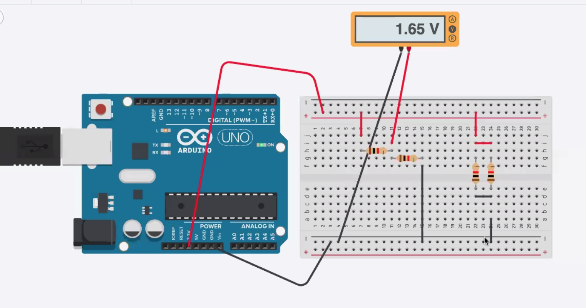
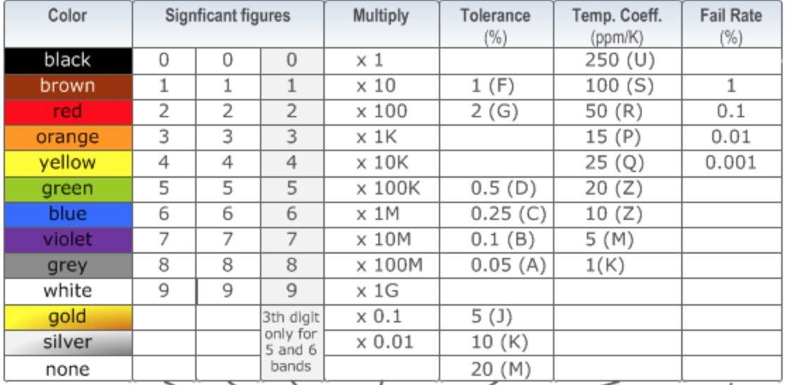

The goal of this class was to leanr about teh basics of circuit and get familiar with settiing up circuits on a breadboard. We started with learning about current and voltage. Current flows through a circuit, and votage describes the energy of teh charges at a particular place in the circuit. The first exercise was to set up a basic circuit taht consists of a resistor and a LED. A microcontroller provides a 3.3v voltage in this particular case. The longer leg of teh LED goes to the anode(positive side) of the circuit. I was able to better understand the way a breadboard works, allowing current to flow under each row and colume. To enclose my circuit, I needed to use wires to make connections across rows and columns. This pictures shows the LED being lighted up.
A multimeter was used to measure the voltage drop, the loss in electric potential. With a multimeter, I proved that the voltage drop around each component in the circuit adds up to the total voltage around the power supply. I used multimeter later in the class for debugging my circuit as well. I used the probes of the multimeter and attached them to the ends of each segment of the wires, in order to detect the discconneted spot according to the beeping sound.
I then silulated two simple circuit on Tinkercad. I used Tinkercad to complete simulations of different types of circuit. Tinkercad is a great tool for foreseeing the circuit before building a physical one. I learnt about the color coding rules for resistors, on which different colored strips represent the number of significant figures and teh multiplier.
  I also learnt how to use Arbuino to communicate with the Metro MO microcontroller.